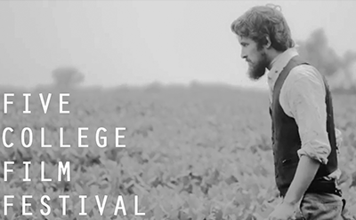
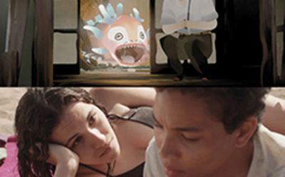
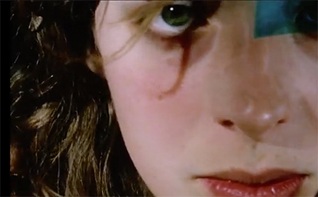
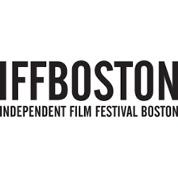
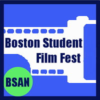
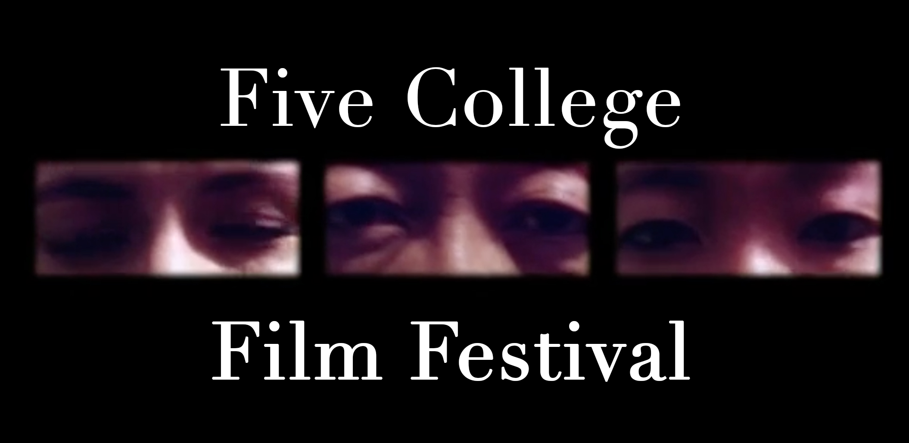
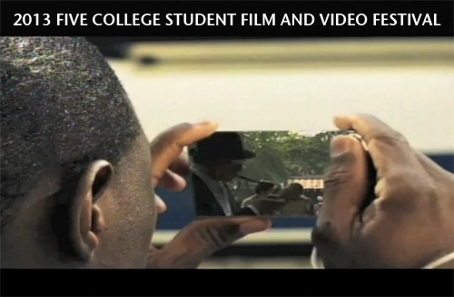
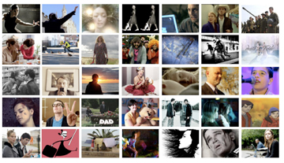

FILM FESTIVALS
2016 Five College Student Film and Video Festival
The Five College Student Film and Video Festival is an annual event featuring original films and videos by Five College students. Founded in 1994, the festival has become an important venue for film students to meet, collaborate and share their productions with their peers and with the Five College film community.
Entry categories include documentary, experimental, narrative, animation, dance on camera and a separate graduate student category.
The festival is not able to screen works longer than 20 minutes. However, you may submit an excerpt from a longer work as long as that excerpt is 20 minutes or under.
Deadline: Friday, February 11th, 2016
Acceptable submission formats include: online through Vimeo or on DVD.
[More...]
CALL FOR ENTRIES: The Cinéfondation Selection of the Festival de Cannes
Created in 1998 and devoted to the search for new talent, the Cinéfondation selects fifteen to twenty short and medium-length films each year from film schools all over the world.
The Cinéfondation selection forms part of the Official Selection and the selected films are presented to the Cinéfondation and Shorts Jury which awards a prize to the best three at an official ceremony.
Each year more than 1600 student films are sent to the Cinéfondation, a testimony of the diversity and dynamism of the young international cinematographic creation. Since 1998 more than 280 films from more than a hundred schools in the world have been selected.
Deadline: Monday, February 15th, 2016
May upload the films directly online or send a DVD if you prefer (must have received DVD of the film for this date).
[More...]
Aesthetica Short Film Festival 2016
Entries are open for the 6th edition of the BAFTA Qualifying Aesthetica Short Film Festival, one of the UK’s leading short film festivals and most exciting cinematic events. Films 30 minutes long and under are accepted within all genres: advertising, animation, artists’ film, comedy, dance, documentary, drama, experimental, fashion, music video and thriller.
ASFF is a festival that celebrates innovation and excellence in filmmaking and presents many opportunities for industry engagement. It provides a chance for both established and emerging filmmakers to get their work seen by vast audiences, plus some of the world’s most acclaimed talents, and connect with festival programmers from the UK and around the world.
Deadline: Tuesday, May 31st, 2016
Click here to learn more about submitting.
[More...]
48 Hour Film Festival
Think you can make a movie in 2 days?
Join UMass Film Production Club for a weekend of film making merriment!
We give you a genre, a prop, and a line of dialogue, and you write, shoot, and edit a short film in 48 hours.
Prizes awarded to 1st place team!
$5 entry fee per team.
Your two-days of filmmaking begin:
Friday, March 27, 2015!
[More...]
2015 Five College Film & Video Festival
The 2015 Five College Student Film Festival will be held on Friday, February 27, at 7pm in the Main Lecture Hall at Hampshire College.
Submission deadline:
3PM February 16, 2015
To enter a submission go to the:
Prizes will be awarded for best film of the festival, best film in each category and best of each campus.
The Five College Student Film and Video Festival is an annual event featuring original films and videos by Five College students. Founded in 1994, the festival has become an important venue for film students to meet, collaborate, and share their productions with their peers and with the Five College film community.
Students from each of the Five Colleges organize the festival with the assistance of a Student Director from the host college and a faculty advisor. The festival, which is sponsored by the Five College Film Council, is held each year during the Spring semester. Submissions are evaluated by a jury of students and faculty members from each campus. Selected works are shown at the festival and awards are given for the best works in designated categories.
Entry categories include documentary, experimental, narrative, animation, dance on camera and a separate graduate student category.
Prizes awarded:
Best Documentary
Best Experimental
Best Narrative
Best Animation
Best Dance on Film
Best Graduate Student Submission
Best of submissions from each campus
Best of Festival
[More...]

Present your work! April 23, 2015
Film Students are invited to present a short three (3) minute clip from a current project as part of this year’s Independent Film Festival Boston (IFFB) and UMB Film Series' Massachusetts Works-in-Progress (WIP).
Participants will receive an All-Access Pass to IFFB and a chance to win the $1,000 WIP Prize.
The event takes place at UMass Boston – Campus Center Ballroom “C” – 100 Morrissey Blvd., Boston, MA on Thursday, April 23rd from 4 – 6PM – followed by a beer, wine and hors d’oeuvre reception sponsored by Sundance. I hope this is of interest to you and your students. I very much encourage you to apply.
For submission details, please visit: FilmFreeway.
Boston Student Film Fest
The third annual Boston Student Film Fest is now accepting student films for it’s 2014 program! Our event has become the top showcase of student films in New England and many of our featured films have gone on to other festivals after being discovered at BSFF. With each year we are always excited to expand, adding new networking events and showcasing opportunities to support our artist’s. Screening and event dates will be announced in early 2014.
To submit a film: Visit www.bostonstudentfilmfest.org/submit
Deadline: Friday, February 28th
Qualifications:
- Made exclusively or majority by a currently enrolled, undergraduate or graduate student at any New England School (Maine, New Hampshire, Vermont, Massachusetts, Rhode Island, Connecticut).
- Any genre or subject matter
- 30 minutes or less
- Completed within the last year (January 2013-present)
- Must not contain ANY copyrighted material (i.e., music, movies television, images etc)
For more other ways to get involved or support the Boston Student Film Fest visit: www.bostonstudentfilmfest.org or contact bsff@bostonstudentarts.org
Five College Film and Video Festival 2014
The Five College Student Film and Video Festival is an annual event featuring original films and videos by Five College students. Founded in 1994, the festival has become an important venue for film students to meet, collaborate, and share their productions with their peers and with the college film community.
Students from each of the Five Colleges organize the festival with the assistance of a Student Director from the host college and a faculty advisor. The festival, which is sponsored by the Five College Film Council, is a competitive event held at the end of the spring semester. Submissions are evaluated by a jury of students and film faculty from each of the Five Colleges. Selected works are shown at the festival and awards are given for the best works in designated categories.
The submission deadline for the 2014 festival is Friday, February 14th at 3:00 p.m.
Entry categories include documentary, experimental, narrative, animation, dance on camera and a separate graduate category. Cash prizes are awarded to the top ranked entries for each category, for the winner from each of the Five Colleges, and for the Grand Prize Winner of the Festival.
Eligibility requirements, submission guidelines, and more information on the Five College Film & Video Festival website. [Festival trailer]
The Ivy Film Festival 2014
The Ivy Film Festival (IFF) is now accepting student short film, documentary, television pilot and screenplay submissions.
We would greatly appreciate assistance in passing this information to students and organizations who may be interested in entering their work to the festival. Since its founding in 2001, IFF has become the largest student-run film festival in the world. This is a festival for students, run by students. IFF offers a unique opportunity for student filmmakers to screen their work, network with other filmmakers, and meet industry professionals. It also provides a quality venue for filmmakers to garner recognition from our panel of industry judges and to learn from industry professionals, including directors, actors, writers, producers, studio executives, and agents.
Past industry guests have included: Martin Scorsese, Oliver Stone, Wes Craven, Adrien Brody, Chan Wook-Park, Jack Nicholson, James Franco, Laura Linney, Brad Grey (CEO of Paramount), Tom Rothman (CEO of Fox), Lena Dunham, Aaron Sorkin, and many more. In addition, the Ivy Film Festival has featured special screenings of popular films including Martha Marcy May Marlene, The East, 127 Hours, Star Trek, (500) Days of Summer, No Country For Old Men, Mean Girls, and others.
Please submit undergraduate or graduate films (short or feature length), TV pilots/scripts, and/or screenplays (short or feature length) for our upcoming festival on April 14-20, 2014 hosted on the campus of Brown University. Films may be submitted online at www.withoutabox.com or via mail. Visit http://www.ivyfilmfestival.com/submissions for more details on how to submit.
Key Submission Deadlines:
Early Bird Deadline (films and screenplays) October 15, 2013
Regular Deadline (films and screenplays) January 15, 2014
Extended Screenplay Deadline: February 20, 2014
Extended Film Deadline: March 1, 2014
If you have any questions/comments, please contact us at director@ivyfilmfestival.com
Women's International Film Festival
Extended Deadline: November 15, 2013
Just a few days left to enter your film for submission to the Award Winning 2014 Women's International Film Festival & Conference. Join the nearly 300 filmmakers from around the world who have entered.
Early Bird Deadline: August 31, 2013
Official Deadline: September 30, 2013
Late Deadline: October 31, 2013
Extended Deadline: (throught withoutabox only) November 15, 2013
Vine Video Contest for 2013 Boston Film Festival
Deadline: October 24, 2013
Enter the Brand New Ultra-Short Category for the Boston Film Festival Via Vine Have Your Video Shown at the Festival & Win Tickets to All Movies, Q&As and After Parties.
See the Boston Film Festival website for info.
2013 No Film Film Festival
Deadline: May 29, 2013
From the NFFF website: "The No Film-Film Festival is back and is better then ever! This year the prizes are bigger, the competition will be fiercer and the 80’s are making a come back! The No Film-Film Festival 2 : 80’s remake will give filmmakers one week to re-imagine a classic American 80’s film into a seven to fifteen minute movie masterpiece. The games begin on Friday May 31 2013 at 7:00pm. Filmmakers have two options you can join the action in person at NFFF headquarters located in Bellows Falls, Vermont or you can be part the fun by joining us online. Each film will be judged by an esteemed professional and the attending audience. The winning film’s team will receive the new Black Magic Cinema Camera! Can you say wicked awesome?! Registration deadline for this killer Competition is May 29th 2013. It’s your choice...Don’t miss out on this years No Film-Film Festival!" [More...]
2013 ABCC Our World Film Festival
Accepting Submissions!
Deadline: Friday, April 9
The Acton-Boxborough Cultural Council presents 3rd Annual Our World Film Series: A Short Night Friday, April 26, 2013.
Call For Entries Deadline for submissions: Entries must be received by Tuesday, April 9, 2013 The Acton-Boxborough Cultural Council (ABCC) Our World Film Series: A Short Night will feature new work from students and faculty of Massachusetts college and university film programs. Filmmakers will be invited to attend the screening and participate in a question-and-answer session. Selected films will also be placed in the permanent collection of Boxborough’s Sargent Memorial Library. The venue of the screening is Acton Town Hall. Please note that there is NO ENTRY FEE.
The goal of the program is to provide a venue for the screening short films by Massachusetts filmmakers, and to bring filmmakers together with our audience for an evening of discussion and discovery.
2013 Five College Student Film & Video Festival
Submissions deadline: FEBRUARY 14, 2013 at 3:00pm
This year, for the first time, the festival will accept submissions online.
Festival will be: FEBRUARY 22, 7:00pm, Gamble Hall, Mt. Holyoke College.
Entry categories include documentary, experimental, narrative, animation, dance on camera and a separate graduate category. Cash prizes will be awarded for winning films!
See the FCFF trailer!
Eligibility requirements and submission information.
Find more information and updates on Facebook and Twitter.
Questions? Contact Student Festival Director, Erica Moulton: 5collegefilmfestival2013@gmail.com.
Aesthetica Short Film Festival 2012
The Aesthetica Short Film Festival is a celebration of independent film from across the world, and an outlet for supporting and championing short filmmaking.
As a dynamic player in the UK film festival circuit, this year’s festival will take place in the historic city of York from 8 - 11 November 2012. The screenings will cover a wide variety of genres and filmic styles, including: drama, documentary, animation, comedy, music video, thriller, experimental and artists’ film. Showcasing films across 15 distinct and historic locations from medieval halls to ancient city walls, the festival invites visitors to create their own viewing experience.
In addition to four days of screenings, there will also be a series of master classes, workshops, and networking with leading industry figures, as well as special events and opportunities to meet the filmmakers.
ASFF 2012 is now open for entries. Deadline: May 31, 2012.[More...]
UVC-TV Film Contest 2012
Deadline: March 30 at 5:00pm
Submissions: UVC-TV 19, 216 Student Union, Amherst, MA
UVC-TV 19 is looking for submissions for the 7th annual UMass Amherst Film Festival!
Categories include: Narrative, Documentary, Experimental, and Animation.
Want to submit a film, but don't have equipment of your own? UVC has all the equipment you need to create your film and it's available to all members! Membership is open to all UMass undergrads and costs $10 for the year.
All accepted films will be screened at the UMass Amherst Film Festival which will take place on April 17th. Prizes will be awarded for each category in addition to best overall film, as determined by a panel of faculty judges. This year, there will also be a student choice award granted to the film that receives the most votes from UMass students.
All current UMass Amherst Undergraduate students are eligible to submit to the festival. Students may submit one film per category. Films can be up to 25 minutes in length and should be submitted as a DVD. Stop by the station, located in 216 student union (by the Hatch), to learn more and pick up a submission form!
[More...]